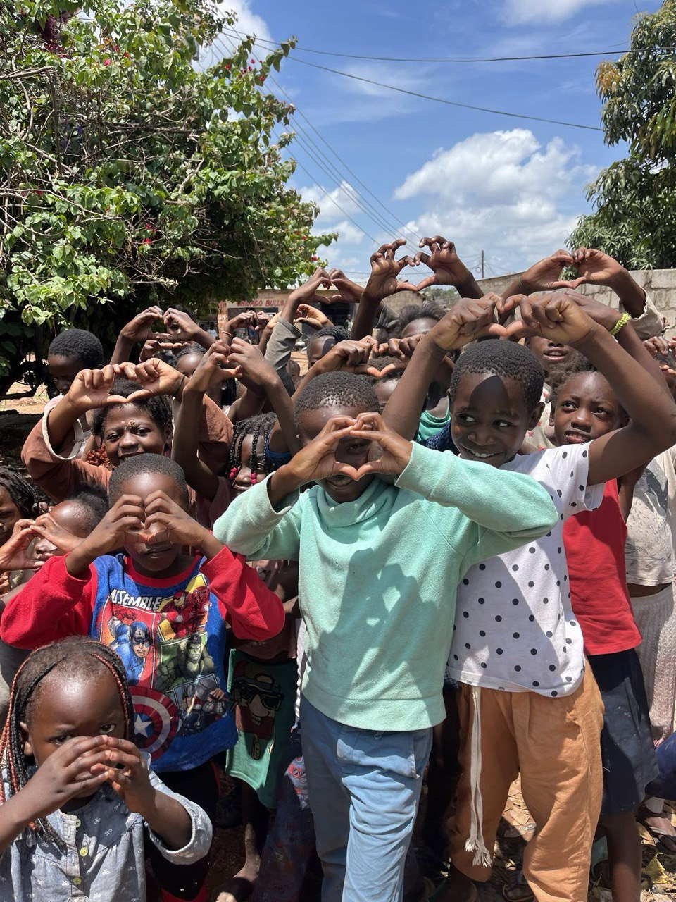
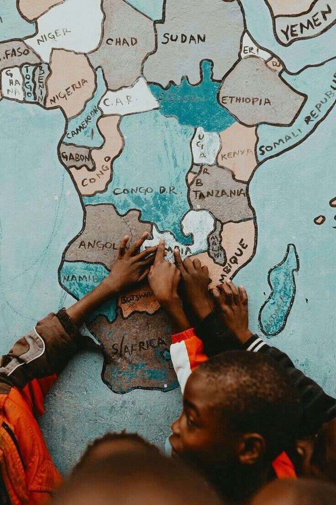

Accueil
Nos actions
Actualité et événement
Document
Contact
Nos actions pour l'inclusion
Découvrez nos programmes et formations dédiés à l'autonomie et l'épanouissement des personnes vivant avec handicap en RDC.
Découvrir nos actions
L'amour guide nos actions

Formation professionnelle
Plus fort ensemble

Inclusion et autonomie
Nos engagements
L'ASAD agit dans différents domaines existentiels de notre société pour accompagner l'épanouissement fiable et non temporaire des personnes vivant avec handicap. Nous soutenons leurs domaines professionnels, orientons les plus jeunes dans la formation et l'apprentissage d'outils adaptés au handicap de chacun.
Nos formations principales
Formation à l'écriture braille
Nous organisons des sessions de formation tout au long de l'année dans le cadre d'apprentissage de l'écriture braille, l'écriture adaptée aux personnes non-voyantes.
En savoir plus →
Formation peinture
Développement de l'expression artistique par la peinture, permettant aux personnes handicapées d'explorer leur créativité et talents cachés.
En savoir plus →
Apprentissage en Maroquinerie
Formation professionnelle en maroquinerie pour créer des objets en cuir et développer des compétences artisanales valorisantes.
En savoir plus →
Nos programmes d'accompagnement
Aide sociale
Soutien matériel et psychologique pour les personnes en situation de précarité, avec une attention particulière aux besoins spécifiques.
En savoir plus →
Bureautique adaptée
Formation aux outils informatiques adaptés pour faciliter l'accès à l'emploi et à l'autonomie dans les tâches administratives.
En savoir plus →
Formation ménagère
Apprentissage des compétences domestiques essentielles pour l'autonomie au quotidien et l'indépendance dans le foyer.
En savoir plus →
Comment nous soutenir ?
Chaque contribution compte pour changer des vies et promouvoir l'inclusion des personnes handicapées dans notre société.
Besoin d'aide ? →
Voulez-vous suivre une formation ? →
Comment faire un don ? →
Pourquoi nous soutenir ? →
Qui sommes-nous ? →
Désirez-vous nous rejoindre ? →
Copyright © 2024 ASAD - Développé par Ephraime Kalala "Winter"